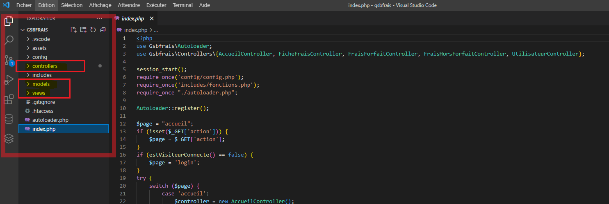
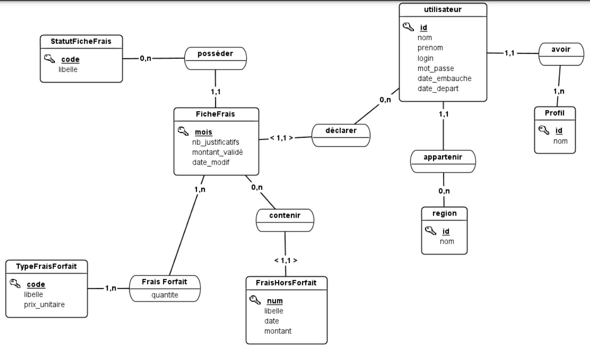

Contexte
Le laboratoire Galaxy Swiss Bourdin (GSB) est issu de la fusion en 2009 entre le géant américain Galaxy, spécialisé dans le
secteur des maladies virales dont le SIDA et les hépatites, et le conglomérat européen Swiss Bourdin.
L’entité Galaxy Swiss Bourdin Europe a établi son siège administratif à Paris tandis que le siège social de la multinationale
est situé à Philadelphie, en Pennsylvanie, aux États-Unis.
L’entreprise compte 480 visiteurs médicaux en France métropolitaine et 60 dans les départements et territoires d’outremer. Les visiteurs médicaux sont répartis en 7 secteurs géographiques : Paris-Centre, Sud, Nord, Ouest, Est, DOM-TOM
Caraïbes-Amériques, DOM-TOM Asie-Afrique.
Les visiteurs médicaux démarchent les professionnels de santé susceptibles de prescrire aux patients les produits du
laboratoire. L’objectif d’une visite n’est pas de vendre mais d’actualiser la connaissance de ces professionnels sur les
produits de l’entreprise. Les déplacements qu’ils mènent, engendrent des frais qui doivent être pris en charge par la
comptabilité. Une gestion forfaitaire des principaux frais permet de limiter les justificatifs. Le remboursement est fait après
le retour de ces pièces.
Situation professionnelle
L'application GsbFrais a été déployée depuis peu. On entre maintenant en phase de maintenance corrective. Les utilisateurs remontent les anomalies recensées par le biais de l’application GestSup de gestion des tickets d’incidents.
Description de la mission
Vous êtes chargés d'effectuer les corrections de bug qui vous ont été attribuées par le responsable support, via l'application GestSup. Vous devez procéder au traitement de ces anomalies, informer l'utilisateur lorsque vous prenez en charge le traitement du ticket puis une fois le problème résolut. L’utilisateur valide les modifications effectuées en clôturant le ticket. Un compte-rendu expliquant la cause de l'anomalie et détaillant les correctifs apportés devra être transmis à votre chef de projet, M. Delpierre.
Ressources fournies
Les tickets d’incidents des utilisateurs qui vous sont attribués, dans l’application GestSup.
Le diagramme E/R du processus de gestion des tickets d’incidents.